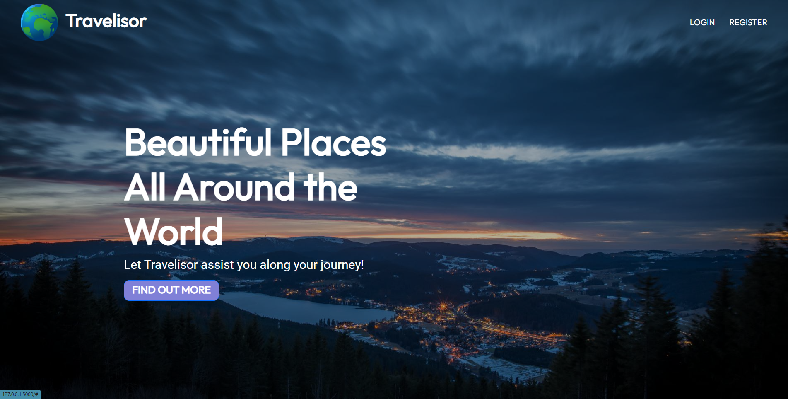
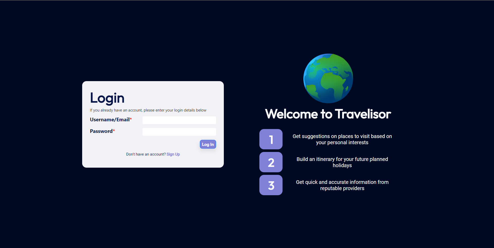
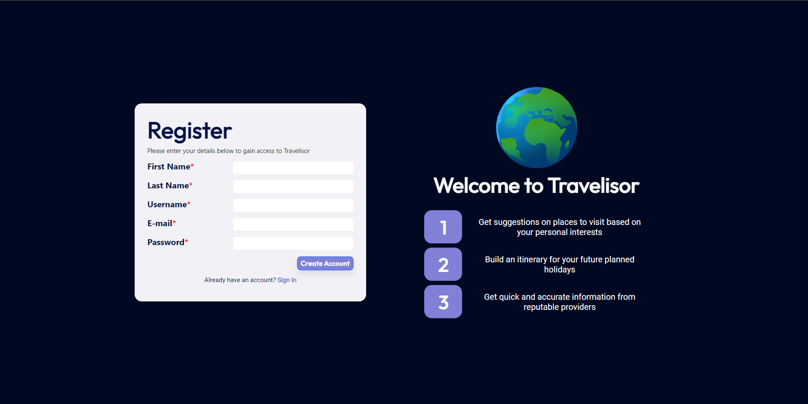
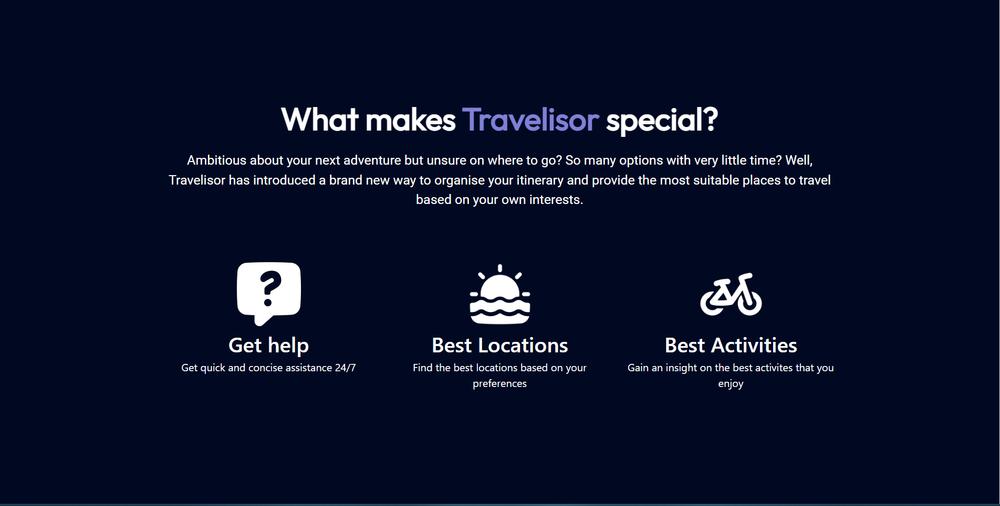
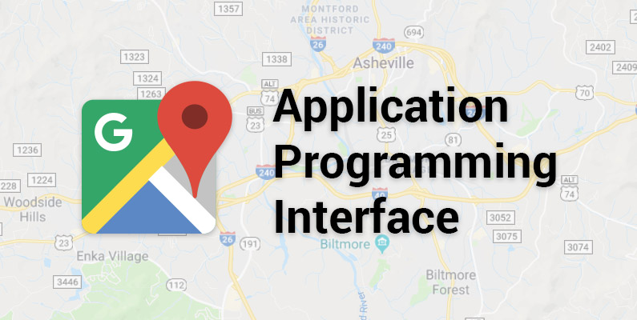
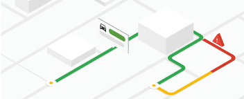

Travelisor - Your one stop destination to travel planning !
Overview
Purpose
The application was designed to make the process of travel planning easier, through incorporation of interactive chatbots. The users can interact with custom tailored travel chatbots and/or other users of the app, in order to plan their holidays in an efficient manner. The aim of this app is to minimize booking hassles, manage travel and accomodation itineraries all in one place, while also providing the users with the ability to discover exciting locations they migh have never heard of.
User Demographics
The application can serve the purpose of individuals who enjoy traveling and want to simplify their travel planning experience. Whether they are frequent travelers or planning their first trip, Travelisor caters to users of all levels of travel expertise. The application has been custom tailored to especially serve the senior citizens, who often have a hard time browsing the web and navigating through a plethora of menus and sub-menus.
Working of the Application
The application functions by providing a user-friendly interface where users can input their travel preferences and requirements, for example the country they want to visit, the type of place they want to visit, and so on. When you first open the app, you will be prompted by the Travelisor Assistant to select a country from the hundreds contained inside the dropview structure. Once you choose a specific country, a list of places associated with that country will be displayed. You can then proceed to ask questions in regards to a particular destination you are interested in and the Travelisor Assistant will provided detailed information based on your request. The users are provided with an option to chat with a chatbot that can personally cater to the questions of the users regarding all aspects of their travel planning, whether they are browsing locations, decided a location and want to know the travel options, prices, places of accomodation or other places of interest nearby their chosen destination. Based on the user preferences, the chatbot then provides the user a variety of options to go forward with. The app's database hosts more than 4000 handpicked unique locations from various countries to provide recommendations. Users can interact with the app in either guest mode, or create a user account and opt to save their preferences for future use.

Landing Page

Login Page

Sign-up Page

Description Page
Build and Run Instructions
Suggested Features
Implementing the Google Maps Interface
-> What is the Google Maps Platform ?
The Google Maps Platform is a map visualisation API to search for locations, obtain directions, and access various geographic and navigational information, by providing the users the ability to interact with an interface similar to the official Google Maps App. It enables the developers to build dynamic, interactive, deeply customized maps, location, and geospatial experiences for their web apps.-> Why integrate the Google Maps Platform ?
This provides a visual representation of the travel destinations and accommodations that the users can plan to visit. This integration would have endless benefits to improve the overall user experience of Travelisor.- Users can get a visual representation of the travel destinations and accommodations they are planning to visit.
- By using custom icons onto the map, users can quickly identify and locate specific destinations they are interested in.
- Users can get information about the proximity between different neighbouring sight-seeing locations.
- Google Maps provides robust route planning and directions functionality, that can help the users for navigation assisstance when they visit a new place.
- Users can virtually explore the surroundings of their chosen destinations using the Street View and Satellite Imagery, get a feel for the local atmosphere, and make more informed decisions about their travel plans.
- This feature would also provide users with the ability to locate and ensure the presence of various amenities like train/bus stations, hospitals, clinics, dispensaries and restaurants.

Google Maps Platform

Route Planning
-> User Story - How would our feature implementation fare among the users ?
- "As an avid travel enthusiast and a frequent traveler, I like to taste the local cuisine, essentially killing two birds with a single stone. This feature lets me search for nearby local restaurants that'd give me the authentic taste that I'm looking for. I can also look for nearby places of interest. Nobody's knows when I'll get the chance to visit this place again."
-> Test Cases
Scenario: User wants to get information about restaurants near a tourist place.Given: the user is on the website
When: the user navigates through the menu
-> AND the user clicks on the map-interface menu and opens the map
-> AND the user enters a location and selects the option to display restaurants
Then: the map should display available restaurants in the specified area denoted by pins
-> AND turn-by-turn directions to the restaurants should be provided in a list or displayed along the route
-> AND the estimated travel time should be displayed for the selected route
-> AND the real-time traffic information should be displayed on the route, if available
Calendar Integration with the app
-> Why integrate calendars into the app ?
Integrating calendars into the Travelisor app would bring several benefits to the users and further enhance their travel planning experience. The option to allow users to import their google, outlook or any calendars of their choice will let them stay on top of their schedule.- Users can have a consolidated view of their travel itinerary alongside their existing personal or work schedules.
- Users can add flights, hotel check-ins, sightseeing tours, and other planned activities directly to their calendar, ensuring that they have a clear schedule and can easily keep track of their plans.
- Users can receive alerts for flight departures, hotel check-in times, and any other scheduled activities, through reminders and notifications
- Users can easily share their travel itineraries with family members, friends, or travel companions by synchronising their calenders, promoting collaboration among group travelers
- Calendars can automatically adjust to different time zones, which is particularly useful for users traveling to different countries or dealing with time differences.

Calendar Integration

Efficient Scheduling
-> User Story - How would calendar integration fare among the users ?
- "As a corporate employee with a busy schedule I rarely get the time off my work. I like to plan my meetings and presentations in advance and stay ahead of time. The calendar feature of Travelisor would allow me to plan my travel and squeeze out moments from my packed schedule, to spend some time for sight-seeing. The ability to synchronize my work schedule with it means that I'll never miss any deadline due to travel."
-> Test Cases
Scenario: User wants to check existing work commitments while planning a travel.Given: the user is on the website
When: the user navigates through the menu to the calendar section
-> AND the user selects a month
Then: the calendar should display the user's existing personal or work schedules
-> AND the travel itinerary should be displayed alongside the existing schedules
-> AND the travel itinerary should be clearly distinguishable from the personal/work schedules (Usage of color-codes)
Advice for Groups
Recommended Tools for Efficient Workflow
I would like to recommend a few software tools to streamline your development process -- Hex Color Picker - A hex color picker is a nifty little tool that will always come in handy whenever you are in need to generate good color combinations for you web design. Be it backgrounds, borders, font-colors or overall templating of the website, this tool will always help you to make your webpage feel consistent with colors.
Try it out! - Chrome Developer Tools - Chrome Developer Tools are an awesome set of web editing and debugging tools built into the Google Chrome browser itself. Using them, you can easily view and update web pages' styles, debug JavaScript code, and optimize website speed. You can also check various web page designs and layout changes with its Inspect Element tool.
You can also test your website design's responsiveness, modify device performance, and limit network speed, by switching between device modes.
Check this out! - Figma - Figma is a collaborative web application for interface design, with real-time collaboration capabilities. Figma is really useful in making mockup-designs for webpages, and multiple people can collaborate on the same project similar to collaborating on a document.
User collaboration is facilitated by Slack, another popular workflow management tool.
Try it out! - Slack - Using Slack users can communicate with voice calls, video calls, text messaging, media, and files in private chats or as part of communities called "workspaces". In addition to these online communication features, Slack can integrate with other software, for example Figma, mentioned above. Slack runs on Web, Windows, Linux, MacOS, Android, Windows Phone and iOS.
Try it out!
Collaboration and Team Communication: Process
Managing communication between team-members is very crucial for a consistent progress with the project. I have a few recommendations to make with regards to this subject, from experience that I gained from working on this project -- Avoid assigning multiple tasks to a single person at one time. The overall work would be lees optimal than if it would have been done in chunks. Make sure you divide the project into enough parts that they feel more like a task than a 'hassle' to wrap-up quick. This granular approach will also help in refining each section of a project better.
- Set realistic expectations from each team-member. Discuss clearly and make sure everyone understands the work they are doing. Arbitrary communication like "will you be able to handle this?" won't necessarily work properly and you'll end up with either work being incomplete or the quality of the work being sub-par.
- Apart from group discussions, make sure that each team-member is comfortable with contacting any other member of their team on their own. This is especially important if two people are working on sections that are intertwined. In our case, I was responsible for handling the database and creating a database interface with functions to be used in the flask app, which is why apart from general group discussions about project progress, I also had to have a proper communication with my team-member who was working on the flask app.
- Make sure every team member keeps their other team-members up-to-date with the status of their work. Constant feedback regarding the proper functioning of the assigned section is very crucial and helps other team members stay on track with their own work without worrying too much about progress of others. In our case, we were constantly communicating with each other with regards to whether the function is working as intended, and/or any other part is missing or needs to be implemented as well.
Project Delivery and Deadline Management: Prioritization
It is understandable that team-members can possibly have other work commitments or deadlines coming up. Hence it is every member's duty to make sure that things with the project aren't left behind while prioritizing other work over the project.- Establish clear project goals, defining the scope of the project. Everyone needs to understand what the project demands and shouldn't waste any extra time trying to understand this. Most of everyone's alloted time for this project should be spent on researching and implementation.
- Create a project timeline with specific milestones and deadlines. Identify critical tasks and set realistic deadlines for each one. Make sure the timeline accounts for individual commitments and allows for flexibility.
- Maintain regular communication with your team members. Schedule meetings or use communication tools like Slack or Microsoft Teams to keep everyone informed about project updates, progress, and challenges. The more you seem supportive and collaborative, the easier it gets for everyone to be on the same page.
- Make sure everyone understands the project's importance and is sincerely alloting time for this project. Set up regular checks of task progress and completion.
- One of the most important things is to make sure you atleast implement the required bare minimum. Avoid getting too excited and going off tangents, trying to implement a feature which is not absolutely necessary.